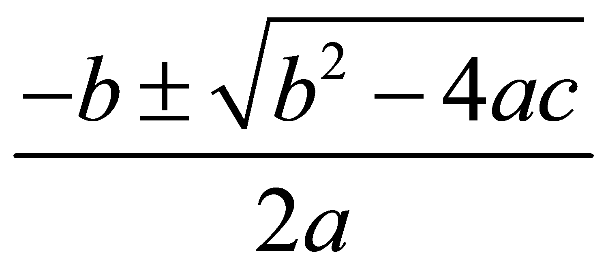
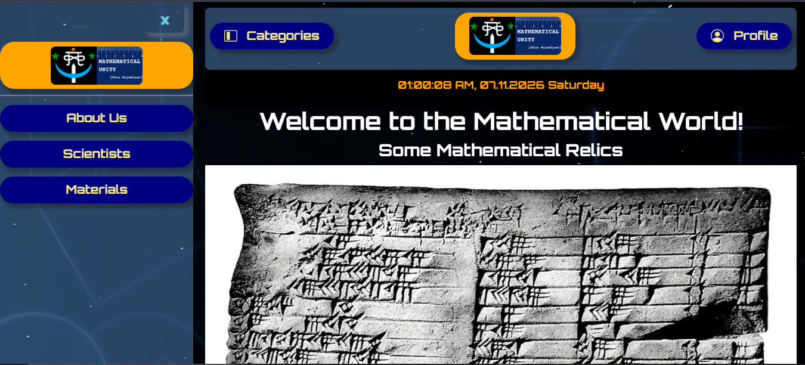

Welcome to the Mathematical World!
Some Mathematical Relics
Mathematics is a field of study that discovers and organizes methods, theories and theorems that are developed and proved for the needs of empirical sciences and mathematics itself. There are many areas of mathematics, which include number theory (the study of numbers), algebra (the study of formulas and related structures), geometry (the study of shapes and spaces that contain them), analysis (the study of continuous changes), and set theory (presently used as a foundation for all mathematics).

Mathematics involves the description and manipulation of abstract objects that consist of either abstractions from nature or—in modern mathematics—purely abstract entities that are stipulated to have certain properties, called axioms. Mathematics uses pure reason to prove properties of objects, a proof consisting of a succession of applications of deductive rules to already established results. These results include previously proved theorems, axioms, and—in case of abstraction from nature—some basic properties that are considered true starting points of the theory under consideration.

Mathematics is essential in the natural sciences, engineering, medicine, finance, computer science, and the social sciences. Although mathematics is extensively used for modeling phenomena, the fundamental truths of mathematics are independent of any scientific experimentation. Some areas of mathematics, such as statistics and game theory, are developed in close correlation with their applications and are often grouped under applied mathematics. Other areas are developed independently from any application (and are therefore called pure mathematics) but often later find practical applications.
What do we provide in this website?
This website looks quite simple, but inside there are many resources and tools for learning and exploring mathematics. In fact, for the benefit of students and enthusiasts, we offer a wide range of educational materials, interactive tools, and problem-solving exercises to enhance the understanding of mathematical concepts which were made by our timeless effort and time. If you just open the Categories section, you will find a wealth of information organized by different mathematical topics, including:

- Scientists
- The Scientists section consists of eight groups, each featuring 24 prominent mathematicians and scientists for which the entirety of mathematics and science is indebted to. In total, one can know of 192 notable figures, from separate groups of one's interests. Here, we provide scientists from different time periods and backgrounds.
- Greek Mathematicians: Mathematicians and thinkers from ancient Greece
- Antiquity Mathematicians: Mathematicians, scientists and thinkers from the Classical Antiquity
- Indian Mathematicians: Mathematicians and scientists from India, spanning from the very ancient periods to the modern age
- East Asian Mathematicians: Mathematicians and scientists from East Asia, including China, Japan, and Korea
- Russian Mathematicians: Mathematicians and scientists from Russia and the former Soviet Union
- Muslim Mathematicians: Mathematicians and scientists from the Islamic world, especially the Islamic Golden Age when mathematics and science reached one of its peaks, contributing significantly to the field in various areas
- Renaissance Mathematicians: Mathematicians and scientists from the Renaissance period, emerging after the Dark Ages of divisions and feudalism
- Contemporary Mathematicians: Mathematicians and scientists from the modern era (approximately 1800 - present), contributing to the advancement of mathematical knowledge, including quantum physics and information theory
- Materials
- The Materials section provides a collection of resources, including websites, articles, and tools that can help students and enthusiasts explore and learn mathematics. This section is designed to support self-study and provide additional learning materials beyond traditional textbooks. Things that we provide in this section for now include:
- Articles on some mathematical features, such as the Olympiads and Mathematical Villages
- Calculator
- A huge trigonometric table, arranged in a user-friendly format like a chocolate bar(!!!)
- The 24-Hour Clock and mathematical explanation of its mechanism
- About Us
- The About Us section provides information about the creators of this website, their mission, and their goals in promoting mathematical knowledge and education. It may also include contact information and ways to connect with the team behind the website.
All rights reserved by the Mathematical Unity
Contact: +8801400044645
Email: mathematicalhorse1453@gmail.com
Our Discord Server: Mathematical Unity [Ulus Riyadiyat]